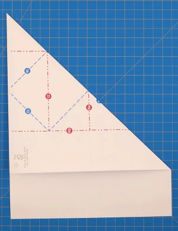
1Step 1
Fold one corner across to the far side, open it, then repeat with the other corner.

Fold one corner across to the far side, open it, then repeat with the other corner.
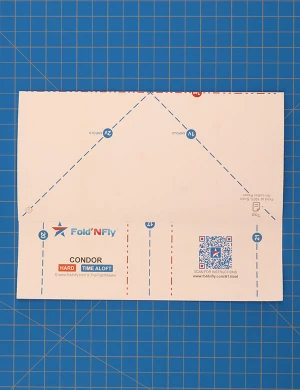
Open and flip the sheet. Fold the top so the new crease cuts through the previous cross.
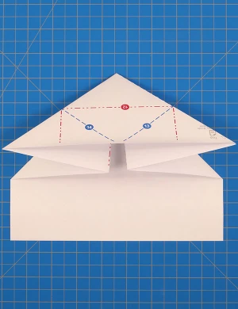
Open and flip the sheet. Accordion-tuck the sides into the middle and press flat.
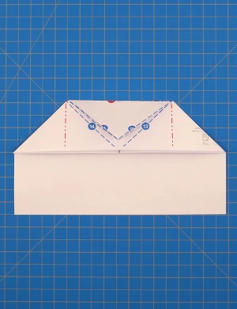
Fold the tip down to the edge of the top layer.
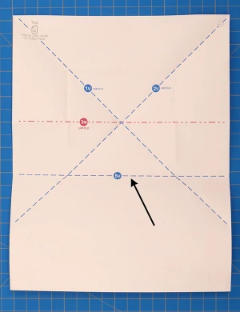
Open everything to the start, then fold on the existing crease just below mid-sheet.
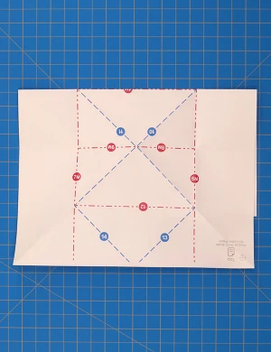
Carry that crease all the way over so it passes the bottom edge.
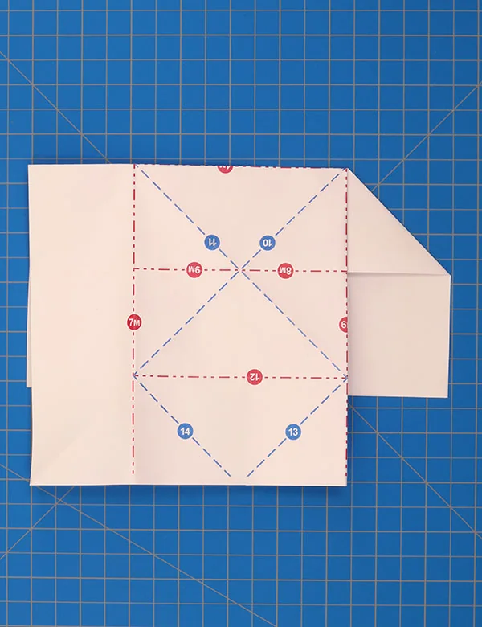
Take the vertical crease on the right side and fold it inside the airplane, tucking it all the way inside as shown in the guide.

Mirror the same fold on the opposite side.

Spin the paper around and carefully re-fold all the existing creases so the center point folds in and the edges accordion fold into the middle as shown in the guide.
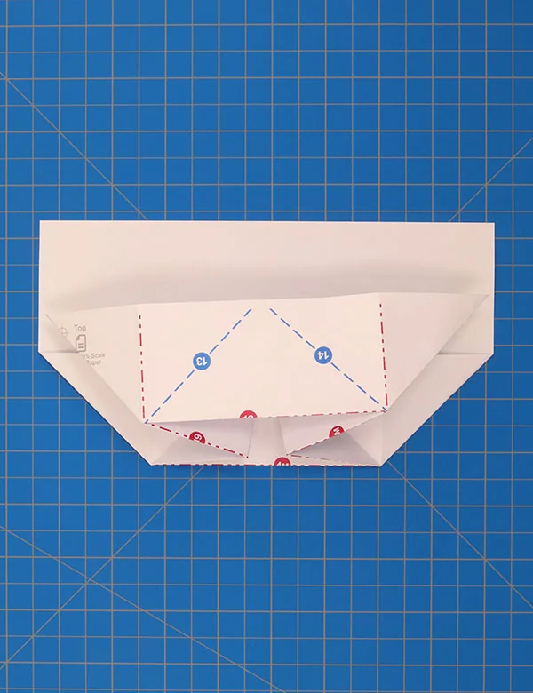
Keep accordion folding the sides in, making sure the left and right sides of the top layer reach all the way out to both sides as shown in the guide.

Press it all flat as shown in the guide.

Fold one side of the top layer diagonally so it points forward now as shown in the guide.

Mirror the same fold on the opposite side.
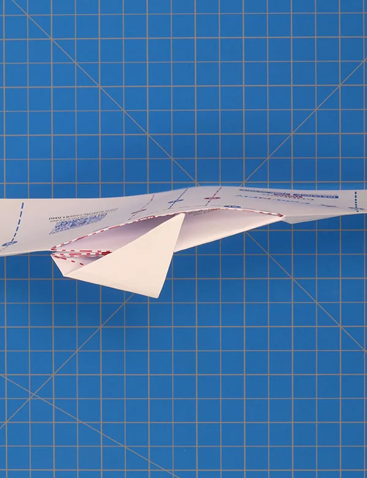
Fold these points backwards around the back and tuck them into the pocket created by the previous steps as shown in the guide.
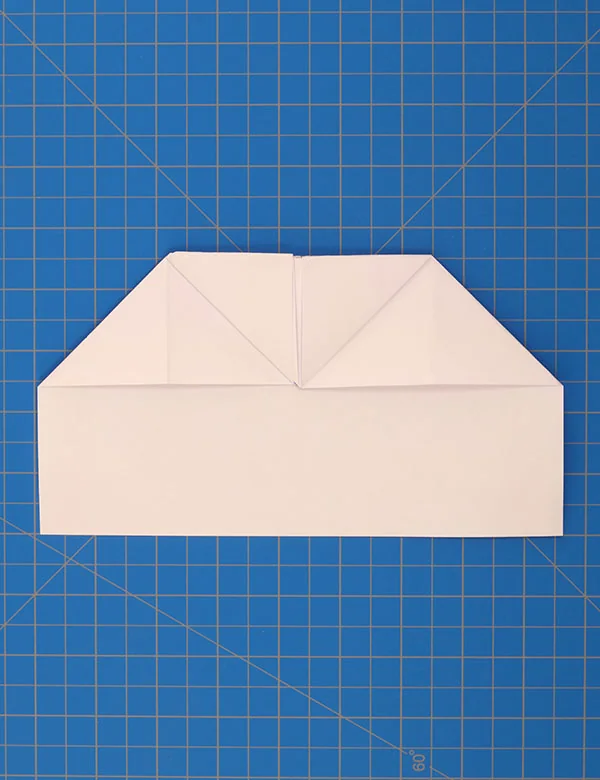
Press it all flat as shown in the guide.

Flip the airplane over and use a ruler to make a diagonal fold on both sides, making a pocket. The depth of the pocket should be about 2.5cm (1 inch) as shown in the guide.
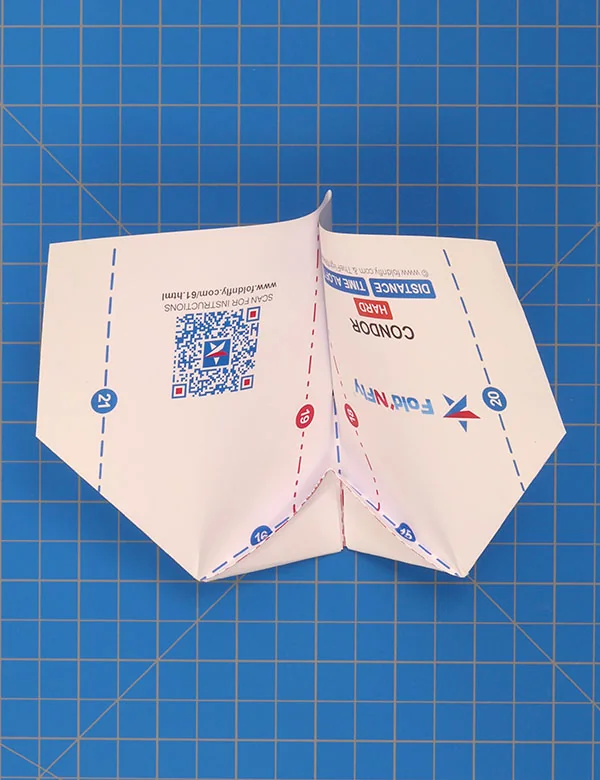
Fold the airplane in half, making sure the pocket folds inward and lays flat as shown in the guide.

Fold the airplane entirely in half, and align the left and right sides so the airplane is symmetrical as shown in the guide.

Fold the wings out, making the folds line up with the pocket on the inside. This special fold will create a lock that will hold the airplane together as it flies as shown in the guide.
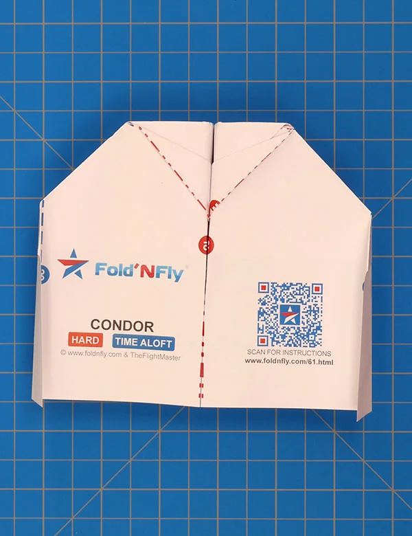
Fold up the two winglets on either side as shown in the guide.

Give the wings an upward dihedral bend to improve stability as shown in the guide.
With a calm day and a level throw, expect only a short distance, since this design is not built for range. Wind, paper weight, and small crease errors all change the result.
A well-trimmed Lock-Fold Glider should hold a very brief flight; the design is not aimed at hang time. Launching from a higher spot and keeping the wings level will extend it.
It is best for long floating glides. Folding skill is advanced. Use Letter & A4, 21 steps, hands only.
Launch softly at a slight upward angle, ideally from a high point, and let the plane glide instead of forcing it.